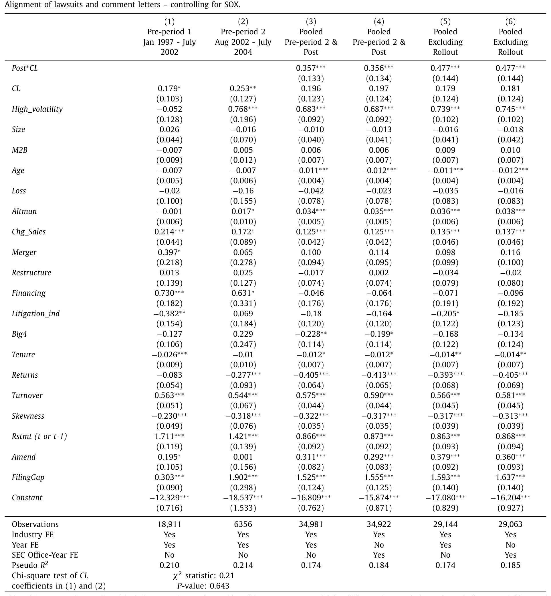
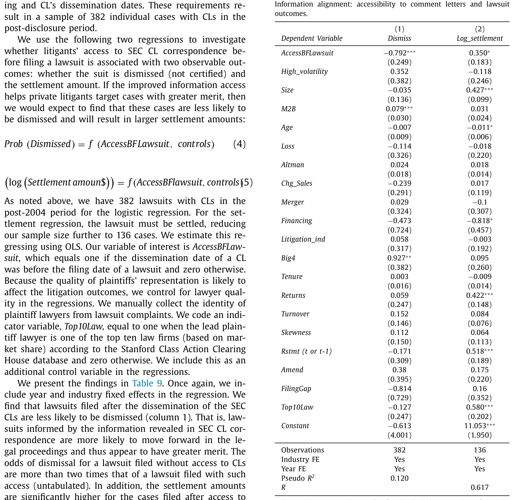
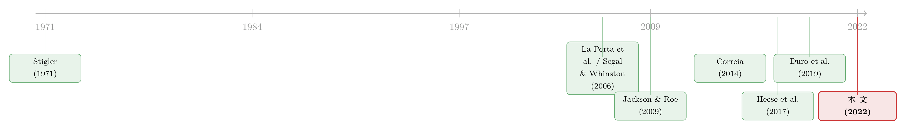

把监管的信件挂到网上之后：公私执法是如何「合流」的
本文读的是 Hutton, Shu & Zheng (2022, Journal of Financial Economics)：2004 年 SEC 决定把自己写给上市公司的「问询函」公开上网，这一纸看似平淡的程序性改革，让公共执法（SEC 的问询）和私人执法（股东集体诉讼）在「该盯谁」这件事上变得越来越一致——监管者更敢动政治关系户，原告律师也学会了去告「真有问题」的公司。透明度，把两套本该互补的执法机制重新拧到了一起。
1 引言：两套执法机制，到底是对手还是队友？
约束公司管理层的不当行为，世界上大体只有两条路。一条是公共执法（public enforcement）：由政府机构出面，比如美国证监会（SEC）；另一条是私人执法（private enforcement）：由私人主体自己出手，最典型的就是股东发起的证券集体诉讼。
这两条路，长期被放在一架天平的两端来比较。理由也很直白。
公共执法者有它的硬伤：它受预算和人手约束，更要命的是,它可能被特殊利益俘获（regulatory capture）——这正是 Stigler (1971) 半个世纪前就点破的老问题。私人执法者呢？它一般不讲政治、不看脸色，但它有自己的天花板：执法手段有限，更关键的是拿不到信息。原告律师没有 SEC 那样的传唤权，看不到公司和监管者之间的私下往来,于是常常只能「追着深口袋打」「抢着第一个冲进法院」，结果告出一堆没什么实质的「滋扰性诉讼（nuisance lawsuit）」，徒增社会的无谓损失（Rose, 2008; Mahoney, 2009）。
正因为各有各的短板，主流的看法是:有效的执法往往是「混合执法」——公私两套机制各补一段（Djankov et al., 2003; Shleifer, 2005）。可问题在于，它们到底是怎么「互补」起来的？是天然就互补，还是需要某种制度条件去撮合？
这就是本文要回答的问题。作者给出的答案，落在一个此前几乎没人正面打量过的变量上——监管透明度（regulatory transparency）。
一句话讲清本文的核心主张：当你把监管者「在干什么」晒到阳光下，它同时干了两件事——逼监管者更尽责（减少俘获），又把监管者独占的信息漏给了私人原告（缩小信息差）。两者叠加，公私执法就会在同一批「高质量目标」上发生重叠。
2 一个干净的政策转折：SEC 把信件挂到了网上
要检验「透明度」这种抽象的东西，得有一个干净的、可以打点的时间断面。本文找到的，是 SEC 的问询函（comment letter, CL）披露政策。
先说什么是问询函。它来自 SEC 的公司金融部（Division of Corporation Finance, DCF）。当审核人员觉得某份申报文件（主要是年报 10-K）需要改进、或者材料存在重大缺陷时，就会发一封问询函，要求公司澄清、修改，往往要来回好几轮。这套「审核—问询」流程，才是 SEC 日常监管的主战场。正如前任首席会计师 Bayless (2000) 所言：绝大多数财报问题都是在公司金融部这一关被悄悄解决掉的，只有最恶劣、最扎眼的那一小撮，才会升级到执法部（Division of Enforcement）去发会计与审计执法公告（AAER）。
接着，关键的转折来了。
2004 年 6 月，SEC 宣布：从 2004 年 8 月 1 日之后申报的文件开始，它将公开这些问询函以及公司的回复。在此之前，外人要看这些信件，只能逐一去提交《信息自由法案（Freedom of Information Act, FOIA）》申请——而这条路有多难走？Duro et al. (2019) 给过一组扎心的数字：2004 年以前，针对问询函的 FOIA 申请只有 56% 被 SEC「受理」，而且平均要等上 697 天 才有回音。对一个集体诉讼的原告律师来说，这等于没有。更何况，FOIA 申请必须点名具体公司、具体日期，律师事先根本不知道哪家公司收到过问询函，连「该申请谁」都无从下手。
所以 2004 年的这次披露，本质上是把一座只对监管者开放的信息金库，一夜之间向全社会免费敞开了。第一批信件在 2005 年 5 月 12 日正式上网；不过作者细究后发现，真正的全面铺开有一个 2004 年 8 月到 2006 年 6 月的过渡期，期间披露被大幅延迟。这个细节在后面的识别里很重要。
一个耐人寻味的旁证是：SEC 在公开信件的同时，还要求公司书面承诺「不得把 SEC 的问询过程当作未来证券诉讼中的抗辩理由」（这就是所谓的「Tandy 信」）。这说明 SEC 自己心里非常清楚——它公开的信息，会直接喂到私人诉讼的口中。
3 识别策略：没有对照组的故事，怎么讲才让人信？
读到这儿，做实证的人会立刻警觉:这听起来像个完美的双重差分（difference-in-differences, DiD）——比较「受披露影响」和「不受影响」的两组公司在政策前后的差异。
但本文最诚实、也最难的地方恰恰在此：它做不了 DiD。
原因很简单：新政策对所有注册人、所有2004 年 8 月 1 日后的申报一视同仁。换句话说，世界上找不到一组「问询函被发出、却没有被公开」的公司充当对照组。作者也老实承认，就算硬造一个对 CL 规则不敏感的「准对照组」，那些公司的性质和处理组天差地别，选择偏差只会把 DiD 推断搅得更浑。
没有对照组，意味着所有推断都暴露在混淆因素（confounding factors）和替代解释之下。本文的真正功夫，不在主回归，而在它如何一层层堵死「别的解释」。
那么，作者怎么把这个故事讲得让人信服？这是全文最见功力的部分，我把它拆成五道防线：
第一，逐年回归（year-by-year）。 这是最有说服力的一招。作者把公私执法的「重合度」按年份逐一估计，发现这种合流紧贴着问询函的公开时点出现——它在披露过渡期之后立刻发生，而在此之前完全看不到类似的趋势。一个混淆因素若要冒充本文的结果，就必须在 2004–2006 这个精确的窗口里同步发生异动，这本身就极其苛刻。
第二，剥离 SOX 第 408 条。 2002 年的《萨班斯—奥克斯利法案（SOX）》第 408 条要求 SEC 至少每三年审一遍每家上市公司，这可能本身就抬高了审核与重述公司的重叠。作者于是把「政策前」重新定义为只含 SOX 之后的样本——结果，公私执法的合流仍然只在问询函公开之后才显著。SOX 不是元凶。
第三，剥离内控缺陷（ICW）。 SOX 带来的内控缺陷披露也可能驱动合流。作者把报告了 ICW 的公司年度要么作为额外控制变量、要么直接剔除，结论纹丝不动。
第四，控制政治意识形态与原告律师质量。 监督 SEC 的国会委员会成员的政治倾向在变，原告律师的代理质量也在提高。把这两者都塞进模型，推断依然成立。再加上对问询函文本内容前后变化的分析，也排除了「是信件内容本身变了」这种可能。
第五，也是我最欣赏的一招——证伪检验（falsification test）。 作者用一个「假装的处理」来验真：把问询函换成 SEC 调查（SEC investigations）。SEC 调查在整个样本期内始终不公开。如果合流真的来自「透明度」，那么在这个始终不透明的执法工具上，就不该看到合流。结果正如所料——证伪检验里没有出现合流。这一笔，几乎是把「透明度是驱动力」这件事钉死了。
（关于「把规则写进法条，和它在现实里真正落地之间还隔着一道执行的鸿沟」这一点，可对照参见《把规则写进法律，不等于写进了现实——得州发薪日贷款里的执法时滞》。）
4 数据
讲清了设计，数据就简单了。
- 样本框架：来自
Compustat，覆盖 1997–2015 年的全部公司年度。 - 问询函：针对 1997 年 1 月 1 日至 2015 年 6 月 30 日间申报的 10-K。Dechow et al. (2016) 证明 SEC 问询函绝大多数与年报相关，每封信对应一个 10-K 申报年（即所谓「涉嫌问题年」）。2004 年 8 月后的信件取自
Audit Analytics；2004 年前的，靠作者自己提交 FOIA 申请拿到——SEC 只提供了收信公司名称和首末通信日期，没有信件正文。 - 股东诉讼：来自斯坦福证券集体诉讼数据库（
Stanford Securities Class Action Clearinghouse），筛选涉嫌违反 Rule 10b-5 的集体诉讼，手工补齐细节。样本剔除 IPO 配售、共同基金、分析师相关案件，且起点设在《私人证券诉讼改革法案（PSLRA, 1996）》之后，以保证口径一致。
5 主要结果：合流、激励、信息
本文的结果可以顺着假设一条线讲下来，环环相扣。
H1：合流真的发生了。 在问询函公开之后，SEC 的问询目标与股东诉讼的目标出现了显著更大的重叠；不仅如此，时间上也对齐了——私人诉讼与公共执法之间的（绝对）申报时滞，在披露政策后显著缩短。两套机制开始盯上同一批公司，而且越来越踩在同一个节拍上。

Table 3
接着，一个自然的问题是：合流，是因为什么？ 作者把它拆成两个渠道——激励和信息。
H2a / H2b：激励渠道。 如果透明度真的逼 SEC 更尽责，那它应该在被「围观」之后更卖力。证据有两面：
- 一方面，披露后 SEC 更可能给那些「会计上有问题」的公司发问询函——具体说，就是那些日后不得不重述财报（restate）的公司。监管者把火力对准了真正的隐患。
- 另一方面，也是更精彩的一面——俘获被削弱了。在信件不公开的年代，SEC 更不愿意去动有政治关系的公司；而在公开之后，这个关系翻转成了正向。
这一翻转，恰好为文献里一桩著名的矛盾提供了和解：Correia (2014) 发现 SEC 会被政治关系户俘获，Heese et al. (2017) 却发现相反。本文的回答是——两者都对，只是看的是哪个透明度régime：当 SEC 的行动对公众不透明时，它可以被俘获；一旦行动被晒到阳光下，这种激励被抑制、甚至反转。
H3 / H4：信息渠道。 这是我认为本文最漂亮的一块。如果合流来自「信息差被填平」，那它应该呈现两个特征。
其一（H3），合流应在信息不对称最严重的公司里最明显。作者用「更小、更年轻、机构持股更少、分析师覆盖更少」来刻画信息不对称——结果与预测大体一致：原本最「看不透」的公司，正是公开信件后重合度上升最多的地方。
其二（H4），也是逻辑链上最关键的一步——信息能不能提升私人诉讼的「质量」？ 这里作者用了一个非常聪明的设计。为了把「律师拿到信息」的效果，从「SEC 激励变了」这种混淆里干净地剥离出来，他们只看披露之后的样本，再利用一个时间差：把诉讼的起诉日和相关问询函的公开日对比——
如果诉讼是在相关问询函公开之后才提起的，原告就有机会看过这些信；如果是在公开之前提起的，原告就没看到。
于是反转出现：看过信件的诉讼，质量明显更高。具体而言，在问询函公开之后提起的诉讼，被驳回（dismissal）的概率更低，和解金额（settlement）更大。一个透明的审核流程，实实在在地降低了原告的信息搜寻成本，鼓励了更有效的私人执法——这正呼应了 Landis (1938) 与 La Porta et al. (2006) 对「私人执法」价值的古老论断。

Table 9
把这条线收束起来：透明度→（激励上）监管者更尽责、更难被俘获 ＋（信息上）原告拿到了过去够不着的线索→公私两套机制在「高质量目标」上合流→执法结果可能因此改善。这就是本文的一个核心。
6 文献脉络
要看清这篇论文站在哪里，得先把这条线捋顺。
最早的源头，是比较经济学里关于「公共控制 vs. 私人控制」的大辩论。Segal & Whinston (2006) 把约束有害行为的两条基本路径——私人诉讼与公共执法——并置在一起；而 Stigler (1971) 则早早埋下了「监管会被俘获」这颗种子。

然后，一批用跨国数据做的研究把辩论推向高潮，却给出了相互矛盾的答案。La Porta et al. (2006) 考察 49 个国家，发现公共执法对股市发展几乎没有助益，真正有用的是强制披露和便利私人执法的责任条款；而 Jackson & Roe (2009) 用监管者的资源作为执法强度的代理，却发现公共执法和披露一样重要，甚至比私人责任标准更重要。一个说私人执法好，一个说公共执法不差——这正是本文开篇那架天平的来历。
但真正关键的一步在于：前人都在「公 vs. 私」之间做选择题，本文却换了个问法——它们之间的关系，会不会随某个制度变量而改变？ 与此同时，问询函公开后涌现的一批微观研究铺好了路：Johnston & Petacchi (2017) 发现问询函结案后买卖价差的逆向选择成分下降、盈余反应系数上升；Duro et al. (2019) 发现公开后被问询公司的财报质量改善。本文接过这两块砖，第一次正面回答：监管透明度如何改变了公私执法的互动。它把「透明度」从一个模糊的好词，变成了一个可以打点检验的因果变量。
（关于「监管者独立性—俘获」这条线，亦可参见《选不选他，决定了银行什么时候倒——独立监管者与金融稳定》；而透明度本身从来不是免费的午餐，它的另一面可见《把名字从名单上划掉：当「透明」成了顶级 VC 拒绝公募资金的理由》。）
7 评论与延伸（Q&A + 研究方向）
(a) 几个可能的疑问
Q：没有对照组、做不了 DiD，这个因果到底站不站得住？
这是本文最大的软肋，作者也毫不回避。它的可信度不靠某一个设计，而靠一组互相印证的证据：逐年回归显示效应紧贴公开时点、滞后于过渡期出现；排除 SOX 与 ICW 后结论不变；控制政治意识形态与律师质量后不变；尤其是用「始终不公开的 SEC 调查」做证伪检验——它没有出现合流。任何替代解释，都得在 2004–2006 这个精确窗口里同步发力，还要避开证伪检验，门槛相当高。但严格说，这仍是「排除法」式的归因，而非一个干净的实验。
Q：「合流」就一定是好事吗？会不会只是两套机制一起去「凑热闹」、一起误伤？
好问题。作者用 H4 来回应：合流之后私人诉讼的质量上升了（驳回率更低、和解金额更大），这说明重叠的是「真有问题」的目标，而非滋扰性诉讼一起涌入。所以这里的合流更像是「互补」——私人机制接过了公共执法因资源或激励而停下的地方——而不是简单的扎堆。
Q：问询函本来就和重述高度相关，SEC「更爱问会计有问题的公司」会不会是同义反复？
不完全是。SOX 第 408 条确实让审核与重述天然更易重叠，但作者用「只含 SOX 后样本」的子样本把这层混淆剥掉了，发现增量的合流仍只在公开之后才显著。也就是说，问的对象变准，不是 SOX 的机械结果，而是叠加在透明度之上的额外效应。
Q：政治关系户的「反转」是不是太巧了，会不会只是政治周期使然？
这正是作者纳入「国会委员会成员意识形态」作为控制变量的原因。在控制了监督 SEC 的政客的政治倾向之后，从「回避政治关系户」到「正向关联」的反转依然存在。这给「透明度削弱俘获」提供了比单纯政治周期更可信的解释，也调和了 Correia (2014) 与 Heese et al. (2017) 的矛盾。
Q：原告律师可能本来就盯着重述公司，不一定真的「读了信」吧？
本文 H4 的设计恰恰为此而生：它只在披露后样本内，用「起诉日 vs. 信件公开日」的相对时间来区分「看得到信」和「看不到信」的诉讼。同样是披露之后、同样面对的是被问询的公司，仅仅因为起诉时点落在信件公开之前还是之后，诉讼质量就出现系统差异——这把「信息可得性」的作用，从「公司本身就有问题」里干净地分离了出来。
Q：这套结论能外推到别的市场（比如公司债、别国监管）吗？
要谨慎。它依赖一个相当特殊的制度断面：一个全国统一、时点清晰的「从不透明到透明」切换，外加两套可观测的执法记录（问询函 + 集体诉讼）。换一个市场，私人执法的渠道、信息基础设施、政治环境都不同，机制未必照搬。但「透明度同时作用于激励与信息」这个双渠道框架，是可以迁移的思考工具。
(b) 几个可能的研究问题与提案
1. 透明度与公司债市场的「私人执法」。
【经济故事】股票市场的私人执法是集体诉讼，债券市场则更多依赖契约条款（covenant）和受托人（trustee）的执行。若把本文逻辑搬到信用市场：监管信息（如对发行人财报的问询）的公开，会不会改变债券持有人触发违约、要求加速偿付的时点与质量？
【可行性】中。问询函数据可得，债券契约违约与谈判数据（如 Mergent FISD 加上手工收集的违约事件）也能拿到，但「私人执法」在债市的度量远不如集体诉讼干净，识别难度更高。
2. 外资持有人能否替代「监管透明度」？
【经济故事】本文说透明度通过「外部监督」削弱了俘获。那么，当一家公司被信息更灵、更不讲本地政治情面的外资机构大量持有时，是否也能产生类似的「逼监管者尽责」或「自带私人执法」的效果？换言之，外资持股能否成为透明度的部分替代品？
【可行性】中。FactSet/13F 加上外资持股比例可构造横截面，可在本文框架内做交互项检验（合流效应是否在外资持股高的公司里更弱——因为它们本就被盯着）。难点在于外资持股的内生性，需要指数纳入等工具。
3. 透明度的「寒蝉效应」：公司会不会反过来减少披露？
【经济故事】既然问询函一公开就可能招来诉讼，理性的公司可能在事前调整行为——把模棱两可的会计处理藏得更深、或在 10-K 里写得更含糊以减少被问询。透明度提升执法质量的同时，是否付出了「披露质量下降」的代价？
【可行性】高。可用问询函公开前后，公司 10-K 文本的可读性、模糊性（如 Loughran-McDonald 词典）变化来检验，数据现成，识别可借用本文同一时间断面。
4. 合流是否最终改善了「真实结果」？
【经济故事】本文证明了合流和诉讼质量上升，但威慑（deterrence）才是终极问题——公私执法对齐之后，公司未来的财报违规、重述率是否真的下降了？
【可行性】中。重述数据（Audit Analytics）可得，可看被问询公司在公开régime下的未来重述概率，但要把「威慑」从「被抓得更多」中分离出来，需要更细的设计。
5. 信息差填平的「拥挤」副作用。 【经济故事】既然原告律师现在能低成本读到信件，会不会出现「人人都去告同一批被问询公司」的拥挤，反而稀释了单个诉讼的预期收益、改变律师的案件选择？ 【可行性】中。可用诉讼数量、律所集中度、单案和解金额在公开前后的分布变化来刻画，数据来自斯坦福数据库，识别可沿用本文的时点逻辑。
8 我的判断
贡献。 这篇论文最大的价值，不在某个惊人的系数，而在问对了问题。它把「公共执法好还是私人执法好」这道纠缠了二十年的选择题，改写成「什么制度条件能让两者互补」，并精准地把「监管透明度」这个变量从背景里拎到了台前。更难得的是，它用一个证伪检验（不公开的 SEC 调查）把「透明度是驱动力」这件事钉得相当牢。激励渠道里政治关系户那个「反转」，顺手调和了 Correia–Heese 的公案，是漂亮的副产品。
对识别的担忧。 也得说清楚：本文终究没有对照组，所有结论都建立在「排除替代解释」之上，而非一个干净的反事实。逐年回归和证伪检验把门槛抬得很高，但「时间序列断点 + 一堆稳健性」的组合，本质上仍是归因而非实验。尤其是「信息」和「激励」两条渠道在 2004 年是同时打开的，作者自己也坦承无法、也不打算把透明度对合流的直接效应（喂信息给原告）和间接效应（先改善 SEC 质量、再传导）分开——这在逻辑上留了一个开口。
后续想看到的。 我最想看到两件事。其一，威慑的终局证据：合流之后，被盯上的公司未来是否真的更少出问题，而不只是「被抓得更勤」。其二，透明度的成本侧：公司是否用「写得更含糊、藏得更深」来回应这种透明，从而部分抵消了它的好处。一个完整的政策评价，不能只算阳光照亮的那一面。
参考文献
- Correia, M. M. (2014). Political connections and SEC enforcement. Journal of Accounting and Economics 57(2–3), 241–262.
- Dechow, P. M., Lawrence, A., & Ryans, J. P. (2016). SEC comment letters and insider sales. The Accounting Review.
- Djankov, S., La Porta, R., Lopez-de-Silanes, F., & Shleifer, A. (2003). The new comparative economics. Journal of Comparative Economics.
- Duro, M., Heese, J., & Ormazabal, G. (2019). The effect of enforcement transparency: Evidence from SEC comment-letter reviews. Review of Accounting Studies 24, 780–823.
- Heese, J., Khan, M., & Ramanna, K. (2017). Is the SEC captured? Evidence from comment-letter reviews. Journal of Accounting and Economics 64(1), 98–122.
- Jackson, H. E., & Roe, M. J. (2009). Public and private enforcement of securities laws: Resource-based evidence. Journal of Financial Economics 93(2), 207–238.
- Johnston, R., & Petacchi, R. (2017). Regulatory oversight of financial reporting: Securities and Exchange Commission comment letters. Contemporary Accounting Research 34(2), 1128–1155.
- Kim, I., & Skinner, D. J. (2012). Measuring securities litigation risk. Journal of Accounting and Economics 53(1–2), 290–310.
- La Porta, R., Lopez-de-Silanes, F., & Shleifer, A. (2006). What works in securities laws? Journal of Finance 61(1), 1–32.
- Landis, J. M. (1938). The Administrative Process. Yale University Press.
- Segal, I., & Whinston, M. D. (2006). Public vs. private enforcement of antitrust law: A survey. Working paper.
- Shleifer, A. (2005). Understanding regulation. European Financial Management 11(4), 439–451.
- Stigler, G. J. (1971). The theory of economic regulation. Bell Journal of Economics and Management Science 2(1), 3–21.
- Yu, F., & Yu, X. (2011). Corporate lobbying and fraud detection. Journal of Financial and Quantitative Analysis 46(6), 1865–1891.